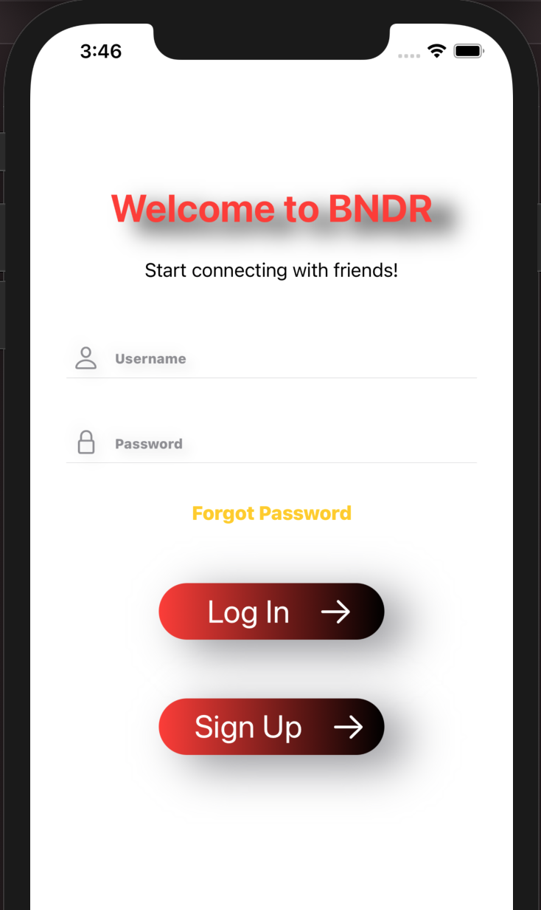

Swift, XCode and Firebase
Started as a project with fellow Computer Science classmates at Virginia Tech, BNDR is a social media app thatm utilizes location services technologies as way to meet and plan trips with friends to local restaurants and bars.
The User Interface for BNDR was designed using the Swift programming language and XCode development tools. The back-end of the app was implemented using Google's Firebase.
As the founder and CEO of BNDR, I have gained experience in all roles in product development and management. As of team consists entirely of students the ability contribute has been extremely variable and thus I have learned valuable lessons in team management and keeping members motivated.